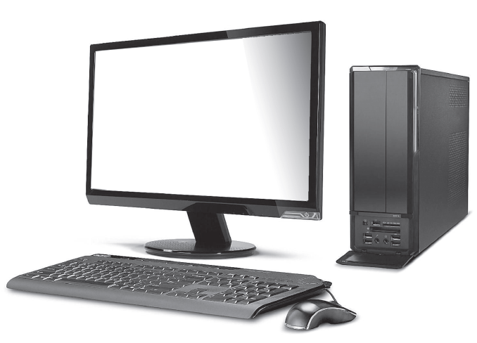
Is it easy to connect our sprawling planet to a point? If it is easy, then how would it be possible? The answer to these questions in today's world is the Computer. In this Modern World computer eases the effort and speeds up the processes to a great extent. Now-a-days the usage of computer plays an important part in every walk of life. So, it is apt time to learn about computers. To start, it is necessary to note that there are three key units in the computer. Understanding of this three units will make us to operate a computer in ease. In this section, let us learn what are the three units? What are the functions of each of these units.
Input Unit
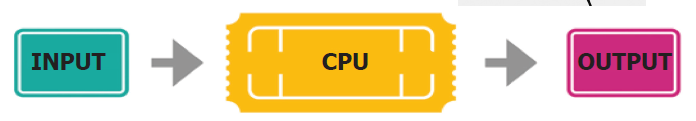
The input unit helps to send the data and commands for the processing. The devices that are used to input data are called input devices.
Keyboard, Mouse, Scanner, Barcode reader, Microphone-Mic., Web camera, Light Pen are some of the input devices.
Keyboard
Keyboard and mouse are the important input units. Keyboard plays an important role in a computer as a input device. Numbers and alphabet plays a role of Data in computer. Keyboard helps to enter data. Keyboard has two types of keys, namely number keys and alphabet keys. The keys with numbers are called number keys and key with letters are called alphabet keys.
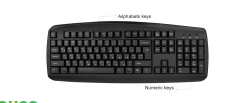
Mouse
Mouse is an essential part of the computer. Mouse has two buttons and a scroll ball in the middle. The mouse is used to move the pointer on a computer screen. Right button is used to select files and to open the folder. Left button is used to carryout corrections in the file. The page on the monitor can be moved up and down using the scroll ball.
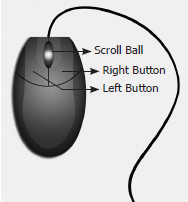
Central Processing Unit (CPU)
CPU is the brain of the Computer. The data is processed in the CPU. The CPU has namely three parts.
1. Memory Unit
2. Arithmetic Logic Unit (ALU)
3. Control Unit
Control Unit
The control unit controls the functions of all parts of the computer.
Arithmetic Logic Unit
Arithmetic and Logic unit performs all arithmetic computations like addition, subtraction, multiplication and division.
Memory Unit
The memory unit in the computer saves all data and information temporarily. We can classify memory unit into two types namely primary and secondary memory. Memory can be expanded externally with the help of Compact Disk (CD), Pendrive, etc.
Output Unit
The output unit converts, command received by the computer in the form of binary signals into easily understandable characters. Monitor, Printer, Speaker, scanner are some of the output devices.
Of the various output devices, monitor is the important output device because it is link to the computer. Monitor screen looks like TV screen. The input data in the form of Alphabets, Numbers, Pictures or Cartoons and Videos it will be displayed on a monitor. There are two types of monitor namely,
1. Cathode Ray Tube Monitors (CRT)
2. Thin Film Transistor Monitors (TFT)
Now a days computer system has TFT monitor as they occupy less space and emit less heat than CRT monitors.
The data is measured in units which is called as Bit. A Bit has a single binary value either 0 or 1.
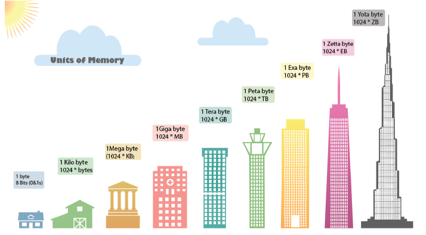
A DVD is capable of storing 6 times more data than a CD
Classification of Computer
The computers can be classified as follows based on their design, shape, speed, efficiency, working of the memory unit and their applications.
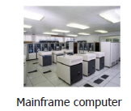
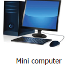
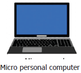
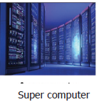
Personal computer and its types
Personal computer comes under the microcomputer. Based on the memory and efficiency in PC they can be classified as
1. Desktop
2. Laptop
3. Tablet
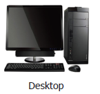
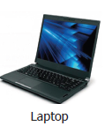
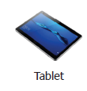
You must have seen tube light and fan working by connection through electric wire. Likewise various parts of the computer are linked through connecting cables. We call computer as system as it is connected with one another. Do you know how these parts are connected? There are many cables used to connect these parts. These cables are called as connecting cables. These cables are found in different sizes. Each cable has its own specific use. Let us see the different types of cables and its uses.
Types of Cables
1. VGA cable
It is used to connect the computer monitor with the CPU.
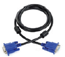
2. USB cable or cord
Devices like Printer, Pendrive, Scanner,
Mouse, Keyboard, web camera, and Mobile phone devices are connected with the computer using USB cord or cable.
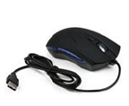
3. HDMI cable
HDMI cable transmits high quality and high bandwidth streams of audio and video. It connects monitor, projector with the computer.
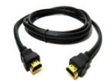
4. Data cable
Data cable transmits data and it is used to connect tablet, mobile phones to the CPU for data transfer.
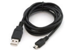
5. Audio jack
The audio jack is used to connect the speaker to the computer.
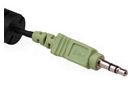
6. Power cord
Power cord temporarily connects an appliance to the main electricity supply.
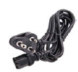
7. Mic cable
To connect the Mic to the CPU, Mic wire or cord is used.
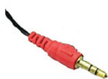
8. Ethernet
Ethernet cable helps to establish internet connectivity.
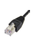
Bluetooth, Wi-Fi are used to connect to internet without using any connecting cables or devices.
1. Bluetooth
Mouse, Keyboard can be connected to the computer using the Bluetooth. Using the Bluetooth the data can be shared with nearby devices
2. Wi-Fi
Net connectivity can be obtained using the Wi-Fi without any connecting cables. Any data from anywhere can be shared using Wi-Fi.
1. Which one of the following is an output device?
a. Mouse
b. Keyboard
c. Speaker
d. Pendrive
2. Name the cable that connects CPU to the Monitor
a. Ethernet
b. Power Cord
c. HDMI
d. USB
3. Which one of the following is an input device?
a. Speaker
b. Keyboard
c. Monitor
d. Printer
4. Which one of the following is an example for wireless connections
a. Wi-Fi
b. Electric wires
c. VGA
d. USB
5. Pen drive is dash device.
a. Output
b. Input
c. Storage
d. Connecting cable
Serial number 1 |
VGA |
Input device |
Serial number 2 |
Bluetooth |
Connecting cable |
Serial number 3 |
Printer |
LDMI |
Serial number 4 |
Keyboard |
Wireless connection |
Serial number 5 |
HDMI |
Output device |
1. Name the parts of a computer.
2. Bring out any two differences between input and output devices.
Activity
(Look at the magic of connecting cables to desktop computer with 4, 3, 2, 1 formula, start from 4 proceed till 1. Now your computer is ready to use).
By connecting the various parts of a computer we can assemble a computer. For the construction activity, students have to use 4-3-2-1 formula.
A system consist of mouse, key board, monitor, CPU, power cables, and connecting cables Students has to connect the four parts of a computer in row 4, using the cables in row 3, through the power cables in row 2 to construct a system.
Using the 4-3-2-1 formula we can connect the parts of the computer
4, Parts
|
Mouse 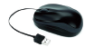 |
Key board 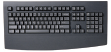 |
Monitor 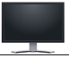 |
CPU 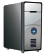 |
3, Connection cables
|
|
VGA 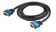 |
USB (connecting cable) for Keyboard 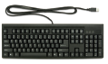 |
USB (connecting cable)for Mouse 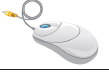 |
2, Power cords
|
|
|
USB (connecting cable)for CPU 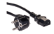 |
USB (connecting cable) for Monitor 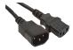 |
1, Working system |
|
|
|
A complete computer |